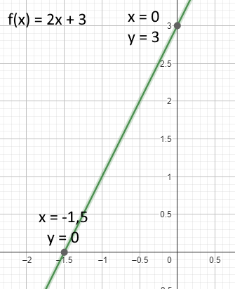

Aprendi este conteúdo com muita facilidade pois já havia visto ele nos anos passados. O conteúdo inteiro é de fácil entendimento e pode ser compreendido de forma simples.
As funções servem para estabelecer relação de dependência entre valores, você substitui um número na função, no caso X, e é retornado outro valor.
Por exemplo, a função f(x) = 2x + 3. Quando substituimos o X por 2, temos 7.
O formato das funções afim é: ax + b, sendo a e b números reais.
Neste conteúdo foram estudados os seguintes conteúdos:
O domínio de uma função é o conjunto de todos os valores que você pode substituir no lugar do X, são todos os números que fazem sentido dentro da fórmula da função.
A imagem é o conjunto de todos os valores que a função pode gerar como resultado, são os valores que podemos obter ao aplicar os valores de domínio.
A função f(x) = 2x + 3 por exemplo, se o domínio for {1, 2, 3}, a imagem seria {5, 7, 9}, pois esses são os valores que a função retorna ao substituir X por 1, 2 e 3, respectivamente.
Para fazer o gráfico de uma função afim, basta calcular o resultado de dois números, marcar no gráfico e traçar uma linha reta.
Quando o a da função é positivo, nesse caso, a reta vai ser crescente, caso ela fosse negativa, ela seria decrescente. E caso o valor de a seja 0, ela é uma função constante, ou seja, ela tem sempre o mesmo valor independente do valor de X, já que X sempre será 0.
Também, como podemos ver, o valor b da função marca onde o gráfico vai interseccionar com o eixo Y, nesse caso 3.
A taxa de variação (a) é o quanto o gráfico aumentará ou diminuirá a cada número. Por exemplo, na função 2x + 3, a taxa de variação é 2.
É possível descobrir a taxa de variação utilizando uma fórmula: (f(x2) - f(x1)) ⁄ (x2 - x(1))
Lembre-se que o x2 SEMPRE tem que ser MAIOR que o x1.
Sendo que f(1) = 5 e f(5) = 13, vamos substituir os valores na fórmula: (13 - 5) / (5 - 1) -> 8 / 4 = 2
Então, a = 2!